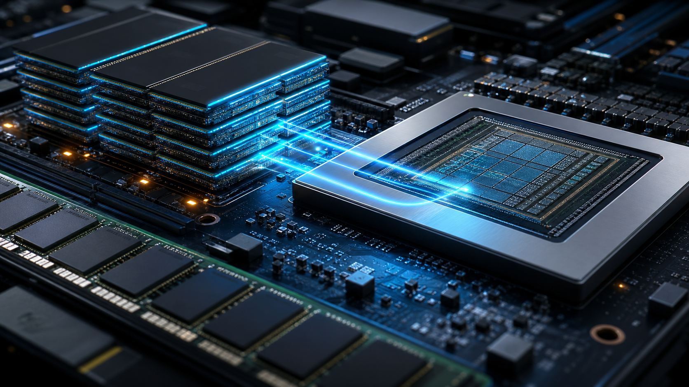
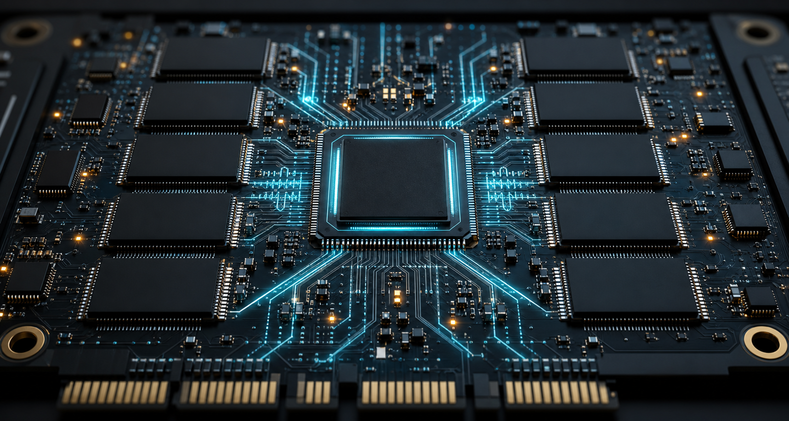

When we talk about AI infrastructure, the first thing that usually comes to mind is GPUs. GPUs handle computation. They are what actually make models run. But if we only look at GPUs, it is easy to overlook another increasingly important question: where does the data come from, where is it stored, how is it delivered quickly to the GPU, and how is it saved after computation is complete? AI is never an isolated computing machine. It is a continuously flowing data system. No matter how powerful a GPU is, if it cannot get the data it needs, it can only wait.
So AI storage is no longer simply about adding more hard drive capacity. It now performs three core functions: storing data, moving data, and managing data. Training data, model files, and user interaction records need to be stored; the data required by GPUs must be delivered quickly; and enterprises also need to know which data can be used and whether recovery is possible when problems occur. In the past, storage was mostly back-end infrastructure. In the AI era, it has begun to directly affect training efficiency, inference speed, and overall cost.
The best way to understand AI storage is to first understand the flow of data. The closer data is to the GPU, the higher the speed requirement and the higher the cost. The farther data is from the GPU, the greater the capacity requirement and the more important cost becomes. The hottest data sits in HBM and DRAM, warm data sits in SSDs, cold data moves into HDDs and object storage, while controllers, software, and system platforms connect these layers together.
Layer One: HBM and DRAM, the Memory Layer Closest to the GPU

Closest to computation are HBM and DRAM. They solve the same problem: allowing the GPU to access data in time.
During training and inference, GPUs need to constantly read model parameters, intermediate results, and context information. If data transfer speed cannot keep up, even the most expensive GPU will end up waiting. HBM can be understood as high-speed memory attached right next to the GPU. It has limited capacity but extremely high speed. DRAM is the working memory on the server side, responsible for caching, scheduling, and various system tasks. Neither is a long-term storage device. Once power is lost, the data disappears. Their purpose is simple: to keep computation from being interrupted.
Many people easily confuse HBM and DRAM, but their roles are different. DRAM is general-purpose memory used by almost all servers. HBM, by contrast, is high-bandwidth memory specifically designed for high-performance computing. As model sizes grow larger, the amount of data GPUs need to read every second continues to increase, making the value of HBM increasingly clear.
The most representative company in this layer is SK hynix. In the past, many investors saw it as a traditional memory manufacturer. But in the AI era, its most important identity is actually as a leader in HBM. Over the past two years, the market has re-evaluated SK hynix largely because of HBM. The demand brought by AI data center expansion will not be distributed evenly among all memory manufacturers. It will flow first to companies capable of mass-producing advanced HBM.
Of course, HBM is still part of the semiconductor industry and cannot escape cyclicality over the long term. If competitors catch up quickly in the future, or if the industry over-expands capacity, margins may also come under pressure. But at the current stage, SK hynix controls a key link in the AI data flow that sits closest to the GPU.
Layer Two: NAND and Enterprise SSDs, the High-Speed Persistent Storage Layer
If HBM and DRAM are responsible for the hottest data, the next reality AI faces is that there is simply too much data.
Training data, model checkpoints, vector databases, RAG document libraries, embeddings, and inference caches cannot be kept in memory for long periods because the cost is too high. But they also cannot be read slowly like archived data. As a result, SSDs have become the most important middle layer in AI data centers.
An SSD can be understood as a high-speed warehouse. It is slower than memory, but it has greater capacity, lower cost, and data remains intact after power is lost. Here, we need to distinguish between NAND and SSDs. NAND is flash memory, essentially a storage material. An SSD is the complete product formed by integrating NAND, controllers, firmware, and interfaces. It is like the relationship between steel and cars: NAND is the raw material, while the SSD is the final product.
One of the companies most worth watching in this layer is Micron. Unlike many storage companies, Micron covers DRAM, HBM, NAND, and enterprise SSDs at the same time, spanning almost the entire storage pyramid. It participates from the hottest data layer all the way to the high-speed persistent storage layer. Therefore, when AI infrastructure expands, Micron can often benefit from multiple sources of demand at once.
However, Micron also retains the typical cyclicality of the storage industry. Even if long-term AI demand continues to rise, short-term earnings and stock performance will still be affected by price fluctuations in DRAM and NAND. So when studying Micron, one needs to look not only at the AI investment cycle, but also at supply and demand across the broader storage industry.
Another company worth watching is Sandisk. Many people know it because of consumer storage cards and portable storage products, but from the perspective of the AI storage value chain, Sandisk is more like a company focused on NAND and SSDs. As AI data centers continue to demand more enterprise SSDs, it is effectively benefiting from the expansion of the entire high-speed storage layer.
Compared with Micron, whose business coverage is broader, Sandisk has a more focused logic. That often gives it greater upside when the industry cycle improves. Of course, it also means Sandisk is more directly affected by NAND prices and the business cycle of the SSD market.
Layer Three: HDDs and Object Storage, the Low-Cost High-Capacity Layer
The third layer is HDDs and object storage, or the low-cost high-capacity layer. AI generates massive amounts of raw data, video, speech, logs, synthetic data, historical model versions, backup copies, and archived data. It is impossible to store all of this on SSDs because the cost would be too high. HDDs are much slower than SSDs, but the cost per TB is lower, making them suitable for long-term storage of large amounts of cold data. Object storage is a way to manage massive amounts of unstructured data, making it suitable for data lakes, backups, archiving, cloud-native applications, and cross-system access.
This layer does not directly determine how fast GPUs run every second, but it determines whether AI companies can accumulate data assets at an affordable cost. AI's long-term competitiveness does not come only from the model itself. It also comes from data accumulation, cleaning, reuse, and protection.
The most representative company in this layer is Seagate.
Seagate does not sell speed. It sells capacity. Its core value lies in storing more and more data at a lower cost. HDDs may sound like an old industry, but behind high-capacity hard drives are highly precise platters, heads, mechanical control systems, and magnetic recording technologies. As long as AI continues to produce more data, the low-cost capacity layer will not disappear.
Many investors tend to think of HDDs as an old technology being replaced by SSDs, but that is not the reality. The development of AI increases not only hot data, but also cold data at an exponential scale. Datasets after training, historical model versions, logs, and backup files all need to be stored for the long term, and in these scenarios, demand for capacity is far greater than demand for speed.
Therefore, Seagate's investment logic is not "the revival of hard drives," but "the explosion of data." As long as the total amount of global data continues to grow, enterprises will need the lowest-cost way to store those assets. From this perspective, Seagate is more like a seller of data warehouses than simply a seller of hard drives.
Layer Four: Controllers and Firmware, the Brain of SSDs

The fourth layer consists of controllers, firmware, interface protocols, and storage software. They are not the easiest parts for ordinary readers to see, but they are extremely important. NAND chips and HDD platters do not automatically become reliable enterprise-grade products on their own. SSDs need controllers to decide where data is written, how errors are corrected, how wear is reduced, and how latency is controlled. Firmware is responsible for making these rules run reliably over time. Put simply, controllers and firmware are the brain of an SSD.
In this layer, the first company worth watching is Phison.
Phison's characteristic is that it provides a complete set of solutions, from controllers and firmware to reference designs. For many branded manufacturers, Phison effectively helps customers quickly turn NAND chips into sellable SSD products. Therefore, when the overall SSD market expands, Phison can often benefit from more customers without directly taking on the risk of NAND price fluctuations itself.
Another important company is Silicon Motion.
Silicon Motion is more like a platform-type controller supplier. Its controllers are widely used in both consumer and enterprise SSD products. Although ordinary users rarely notice controller brands, the controller actually determines an SSD's performance, stability, and lifespan.
As AI inference, long context, vector databases, and RAG applications develop, SSDs will need to handle more complex random reads, stricter latency requirements, and higher power-efficiency pressure. This will continue to increase the importance of controllers and firmware. Therefore, although Phison and Silicon Motion receive less attention than SK hynix or Micron, they occupy a key position in the process of turning SSDs from raw materials into system-level products.
Layer Five: Storage Systems and Data Management Platforms
One layer higher, we are no longer talking about individual pieces of hardware, but complete storage systems.
Enterprises do not want to buy thousands of SSDs, hundreds of servers, and various networking devices, then manually stitch them together. What they need is a complete platform that can be deployed, expanded, backed up, restored, and managed. File storage, object storage, storage arrays, and data management software are all important components of this layer.
The most typical representative of this layer is Dell.
When many people mention Dell, they first think of PCs or servers. But in the field of AI infrastructure, its more important role is actually as a system integrator. Dell's value does not lie in producing NAND or HBM, but in integrating servers, GPUs, networking, storage, software, and services into AI infrastructure that enterprises can use directly.
For many enterprises, they do not care which manufacturer supplied a particular NAND chip, nor do they care what model of controller is being used. What they care about is whether the system can operate reliably, whether it can be expanded in the future, and who will take responsibility when something goes wrong. That is precisely the complete solution capability Dell provides.
As AI infrastructure gradually moves from the experimental stage to large-scale deployment, the importance of this system integration capability will likely increase further. A server is one transaction, but long-term data management and enterprise service create an ongoing relationship.
Conclusion: Whoever Controls the Data Flow Controls the Value
Looking at it this way, market attention over the past few years has been concentrated almost entirely on GPUs and computing power. But as models become larger and data volumes continue to rise, the importance of storage is being re-recognized.
That is because the development of AI does not only increase demand for computation. It also amplifies demand for data production, transmission, and management. Training requires massive amounts of data. Inference requires fast data access. Enterprises also need to store increasingly large data assets over the long term. The opportunities created by expanding computing power are visible to everyone, while changes in data infrastructure are often repriced by the market only after demand truly breaks out.
From an investment perspective, the biggest characteristic of the storage industry is that it has both the long-term growth logic brought by AI and the cyclicality of the traditional hardware industry. Different parts of the value chain are affected differently by supply and demand, technological iteration, and capital expenditure, so it is difficult to summarize the entire sector with one unified framework.
But one thing is relatively clear: if AI continues to move toward larger models, longer context, and broader enterprise applications, then data will only become more important. The infrastructure formed around data storage, access, and management is also likely to become a continuously benefiting part of the AI value chain.